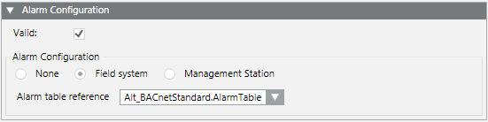
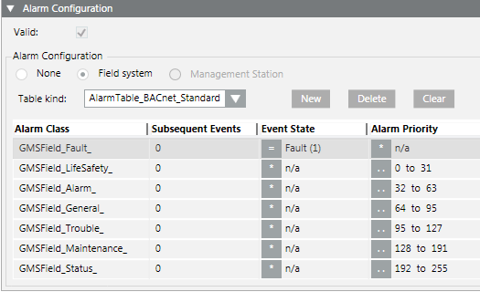

Field System (FS) Alarms
Field system alarms are generated at the level of the subsystem, panel or automation station. Alarm tables are used to map these field events to Desigo CC alarm classes.
Set up a Field System Alarm
- In System Browser, select Project > System Settings > Libraries > [... ] > [object model].
- Select the Models & Functions tab.
- In the Properties expander, select the property (for example, Alarm, Fault).
- In the Alarm Configuration expander, select the Valid check box.
- Select the Field system option.
- From the Alarm table reference drop-down list, select the alarm table you want to apply.
- Repeat steps 3 to 6 for each property as needed.
- Click Save
 .
.
- The field system alarm is configured on the property. The corresponding FS check box is selected in the Properties overview.

Example of an alarm table. For information about how to edit or configure alarm tables see Modifying Alarm Tables.
